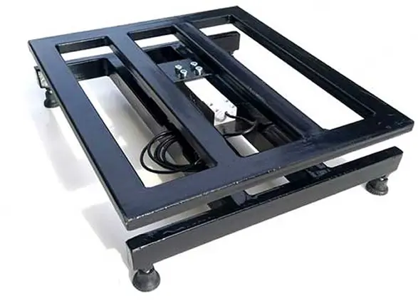
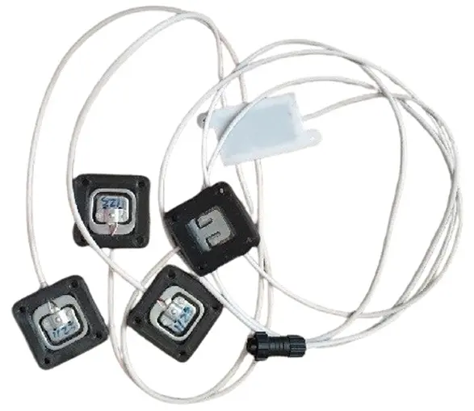

Віримо в перемогу ЗСУ!
Працюємо з 09:00 до 18:00 Пн-Пт.
Зараз можливі затримки з відправкою замовлення - в середньому 2-3 тиждні.
Медозбір як на долонях!

Пасічні ваги 4G LTE та Wi-Fi купити в Україні
-
Збір і передача параметрів
Наші пристрої BH-01 (для одного вулика) та BH-04 (для чотирьох вуликів) дозволяють у реальному часі фіксувати вагу, температуру та інші параметри пасіки. Дані автоматично передаються на веб-сервер bee.in.ua через 4G LTE або Wi-Fi, щоб ви могли стежити за медозбором онлайн. Інструкція >
-
Автономність
Пасічні ваги BH-01 і BH-04 спроєктовані для тривалої роботи без постійного обслуговування. Економне енергоспоживання та вбудований акумулятор забезпечують автономність і надійність — пристрій працює тижнями без підзарядки.
-
Віддалений контроль
Підтримка 4G LTE та Wi-Fi дозволяє встановлювати ваги практично в будь- якій точці України. Ви можете залишати вулики без постійної присутності та отримувати дані про стан пасіки з будь-якої країни, де є інтернет.
Що ви отримуєте з пасічними вагами BeeHappy
Не просто “ваги”, а зрозумілий контроль медозбору та стану бджолосім’ї — онлайн і без зайвих поїздок на пасіку.
-
Бачите реальний взяток щодня — графік ваги показує динаміку медозбору в реальному часі.
-
Економите час і пальне — менше “холостих” поїздок, виїжджаєте тільки коли є сенс.
-
Плануєте роботи на пасіці — кочівля, розширення, відбір меду — на основі даних, а не здогадок.
-
Контролюєте мікроклімат — температура/вологість допомагають вчасно помітити проблему.
-
Отримуєте сповіщення — дані доступні у веб-кабінеті, а ключові події можна контролювати дистанційно.
-
Стабільна автономна робота — ваги спроєктовані для тривалого використання без постійного обслуговування.
-
Контроль пасіки з будь-якої країни — доступ до даних з телефону/ПК, де є інтернет.
-
Розумієте “здоров’я” пасіки — тренди підказують, коли варто втрутитись.
Підійде як для стаціонарної пасіки, так і для кочівлі — оберіть комплектацію для 1 або 4 вуликів.
Електронні ваги для пасіки купити в Україні
-
Надійна вагова платформа
Платформа розрахована на навантаження до 350 кг і виготовляється з міцної металевої профільної труби 20×40×2 мм та 40×40×2 мм. Конструкція стійка й довговічна, підходить для роботи в умовах пасіки. Для точної установки передбачені регульовані ніжки, що дозволяє виставити ваги по горизонту навіть на нерівній поверхні.
-
Типорозміри
Стандартні габарити вагової рами складають 440×500×125мм, що робить її універсальною для більшості вуликів.
-
Сумісність з вуликами
Ваги підходять для таких типів вуликів: Рогатий, Рутівський, Багатокорпусний, Лежак Даданівський, Лежак український та інші моделі. Це робить їх універсальним рішенням для більшості пасік.
-
Виготовлення під замовлення
За запитом можлива розробка вагової платформи з індивідуальними розмірами та вантажопідйомністю. Це зручно для пасічників із нестандартними вуликами чи павільйонами.


Простий датчик ваги для вулика
-
Доступне рішення
Для пасічників, яким не потрібна повноцінна металева платформа, ваги BH- 01 можна укомплектувати простим датчиком ваги. Це компактне та більш економічне рішення для контролю медозбору.
-
Особливості та відмінності
На відміну від вагової платформи, показники спрощеного датчика сильніше залежать від змін температури повітря. Також його встановлення та налаштування по горизонту потребують більшої уваги.
-
Максимальне навантаження
Простий датчик ваги розрахований на навантаження до 200 кг, що підходить для більшості стандартних вуликів.
Порівняння моделей пасічних ваг
Оберіть потрібний варіант комплектації для вашої пасіки
Які параметри фіксують пасічні ваги
-
Показники всередині вулика
Розумні пасічні ваги фіксують ключові параметри бджолиної сім'ї в режимі реального часу. Прилад вимірює вагу вулика, а також температуру і вологість повітря всередині. Ці дані допомагають відстежувати процес медозбору та стан бджіл без частих оглядів.
-
Погодні умови
Додатково ваги оснащуються зовнішнім датчиком температури, що дозволяє дистанційно контролювати мікроклімат та погодні умови в місці розташування пасіки.
-
Службові параметри
Для зручності пасічника прилад також передає на веб-сервер: рівень заряду акумулятора, баланс SIM-карти та якість сигналу GSM або Wi-Fi. Це гарантує стабільну роботу пристрою та своєчасне обслуговування.